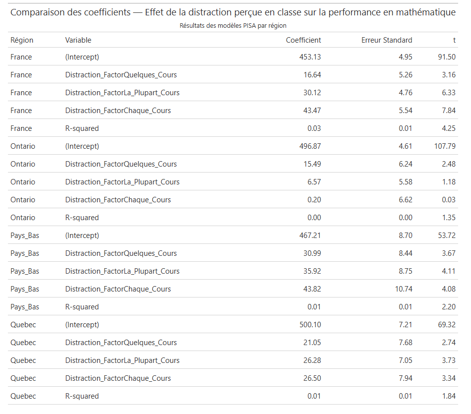
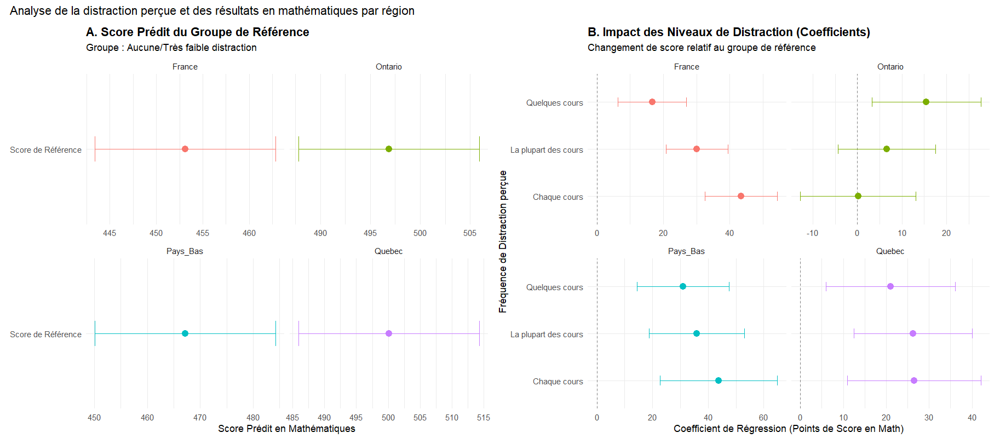

Analyse de l’impact des politiques d’interdiction de l’usage du cellulaire à l’école
Question de recherche
Est-ce que les politiques d’interdiction de l’usage du cellulaire à l’école au Québec, en Ontario, en France et aux Pays-Bas favorise le climat et la performance scolaire?
Revue de la littérature
Les recherches récentes montrent que les interdictions de cellulaire à l’école contribuent à un environnement plus calme, réduisent les distractions et favorisent de meilleures interactions sociales entre élèves. Les enseignants rapportent une meilleure concentration et une diminution des comportements perturbateurs (Böttger & Zierer, 2024; Selwyn & Aagaard, 2021). De plus, ces politiques peuvent réduire les cas de harcèlement, notamment le cyberharcèlement, ce qui améliore le sentiment de sécurité et le bien-être des élèves (Abrahamsson, 2024). Les interdictions de téléphones intelligents ont un effet significatif, mais modeste (\(d = 0.162\), \(p < 0.05\)) sur la performance académique et le bien-être social. Cet effet est plus prononcé dans le domaine du bien-être social que dans celui de la performance (Böttger & Zierer, 2024), même si certaines études montrent des effets positifs et significatifs de l’interdiction du téléphone en classe sur la performance scolaire en mathématiques et en sciences (Beneito & Vicente-Chirivella, 2022).
Cependant, plusieurs études montrent que les effets de l’interdiction du téléphone restent ambigus et que, parfois, l’interdiction défavorise le climat scolaire. L’efficacité dépend fortement de la rigueur de l’application et de l’adhésion des élèves et du personnel. D’abord, la procédure pour interdire les téléphones était souvent lourde et créait des conflits entre les enseignants et les élèves (Grigic Magnusson et al., 2023). Aussi, les téléphones étaient déjà utilisés comme des outils pédagogiques importants et souvent ils étaient jugés comme plus pratiques, plus accessibles ou plus économiques que les ordinateurs portables fournis par l’école (Grigic Magnusson et al., 2023). Même lorsque les interdictions étaient bien respectées, les enseignants ont constaté que les ordinateurs portables de l’école devenaient une source de distraction tout aussi importante que les téléphones. De plus, les contournements de l’interdiction ont affecté la confiance qu’avaient les enseignants envers les élèves (Grigic Magnusson et al., 2023) et les interdictions ont parfois directement accru la détresse psychologique des élèves, notamment en France où 43 % des élèves déclarent ressentir de l’anxiété sans leur téléphone (Böttger & Zierer, 2024).
Hypothèse
Les politiques d’interdiction de l’usage du cellulaire à l’école favorise le climat scolaire, mais n’ont pas d’effet sur les performances scolaires.
Outils utilisés
Google scholar a été utilisé pour rechercher des articles scientifiques sur le sujet.
Consensus a permis de compléter la recherche d’article et de la systématiser.
Zotero a permis de stocker les références des articles retenus et permettra une gestion facile des références (citation et bibliographie).
Gemini a été utilisé pour traduction des passages de texte en anglais, pour résumer des articles scientifique afin de repérer plus rapidement les passages importants des articles sélectionné et pour corriger des fautes de français.
Collecte de données
Les données utilisées dans ce travail proviennent de bases de données en libre accès. Les données de PISA 2022 et TALIS 2024 ont été récupérées. Ce sont deux études de l’OCDE qui offrent un aperçu essentiel de l’état de l’éducation mondiale. PISA se concentre sur les élèves et TALIS sur les enseignants. Les bases de données sont facilement accessibles sur le site de l’OCDE. Pour télécharger les bases de données, il était impératif de remplir un court sondage sur notre projet académique.
Analyse et visualisation des données
Pour comprendre l’effet de l’interdiction du téléphone sur les performances scolaires, les données les plus intéressantes dans la base de données PISA étaient la performance en mathématiques et les réponses à la question suivante : Les étudiants sont-ils distraits en utilisant des ressources numériques ? (Jamais, quelques cours, la plupart des cours, tous les cours).
Ainsi, un modèle de régression linéaire multiple a été calculé. Ce dernier cherche à quantifier la relation entre le score en mathématiques d’un élève et les différents niveaux de distraction perçue, tout en contrôlant pour nos quatre régions.
Pour garantir que nos résultats de régression soient représentatifs de l’ensemble de la population étudiante, nous avons utilisé les poids fournis par la base de données PISA, ce qui assure que nos données représentent fidèlement la relation dans la population réelle.
De plus, parce que PISA utilise un test complexe où aucun élève ne répond à toutes les questions, et afin d’obtenir une mesure fiable des compétences, PISA génère plusieurs estimations du niveau de compétence de chaque élève, appelées scores plausibles. Ainsi, nous avons effectué la régression sur les 10 scores plausibles pour suivre la méthodologie de l’OCDE.
Voici les résultats, présentés sous la forme d’un tableau et d’un graphique :
Tableau de régression

Graphique de régression

Contre-intuitivement, dans toutes les régions, les élèves qui se disent distraits par les ressources numériques obtiennent un score en mathématiques prédit plus élevé que le groupe de référence qui se dit rarement ou jamais distrait par les téléphones. Notre analyse montre donc que l’interdiction des téléphones aurait des effets négatifs sur la performance scolaire.
Pour comprendre l’effet de l’interdiction du téléphone sur le climat social, les données les plus intéressantes dans la base de données TALIS 2024 étaient les questions :
TT4G34D : En pensant à l’utilisation des ressources et outils numériques pour l’apprentissage des élèves, dans quelle mesure êtes-vous d’accord ou en désaccord avec les affirmations suivantes → l’utilisation des ressources et outils numériques distrait les élèves de l’apprentissage.
TT4G65A : Dans quelle mesure êtes-vous d’accord ou en désaccord avec les affirmations suivantes concernant ce qui se passe dans cette école → les enseignants et les élèves s’entendent généralement bien.
Ainsi, notre variable indépendante est la perception des enseignants de la distraction causée par les ressources et outils numériques (dont font partie les téléphones) et notre variable dépendante, la qualité perçue de la relation enseignants-élèves. Puisque le codebook de la base de données TALIS 2024 n’est pas encore disponible, le Québec ne peut pas être explicitement repéré. De plus, l’Ontario n’a pas participé à l’étude. Ainsi, cette partie de l’analyse ne traitera que de la France et des Pays-Bas. Voici un graphique représentant un nuage de points de la distribution de la la distraction perçue et de la qualité de la relation enseignants-élèves avec une régression.
Les résultats montrent que plus la distraction perçue est élevée, moins la qualité de la relation enseignants-élèves est bonne. Cependant, ces résultats sont très faibles, avec des pentes de seulement \(-0.04\) pour la France et \(-0.03\) pour les Pays-Bas. Notre analyse montre donc que l’interdiction des téléphones aurait des effets positifs, mais faibles, sur le climat scolaire.
Outils utilisés
Gemini a servi à chercher des données pertinentes dans les codebooks, à expliquer ces derniers et a permis de vibecoder pour l’analyse et la visualisation graphique.
Gemini CLI a été très utile pour insérer les graphiques dans ce fichier Markdown via des prompts.
R a permis d’importer les bases de données nécessaires à l’étude, de nettoyer les données et de créer les tableaux et graphiques.
Les packages R comme readr, haven, intsvy, et dplyr ont été utilisés pour importer et transformer les données. ggplot2, patchwork, modelsummary, purrr et gt ont été mobilisés pour la visualisation graphique et la mise en forme esthétique des résultats de régression. De plus, plotly a été utilisé pour transformer les graphiques ggplot2 en versions interactives.
Discussion
Conclusion de l’étude
Pour conclure, notre hypothèse selon laquelle les politiques d’interdiction de l’usage du cellulaire à l’école favorisent le climat scolaire, mais n’ont pas d’effet sur les performances scolaires est infirmée. Nos analyses montrent que l’interdiction de l’usage du cellulaire à l’école favorise légèrement le climat scolaire, mais que les effets sur les performances scolaires sont négatifs.
Choix généraux des outils
L’utilisation du logiciel R est motivée par le plaisir d’utiliser un outil qui respecte la philosophie du logiciel libre. D’abord, R est intéressant puisqu’il est gratuit et donc très accessible. De plus, grâce à sa grande flexibilité, R est compatible avec plusieurs autres outils et langages. Il fut notamment très utile pour écrire ce fichier Markdown. R est aussi le logiciel d’analyse le plus utilisé dans le domaine des sciences sociales. De plus, la transparence et la réplicabilité de notre étude sont facilitées puisque R et ses packages sont open source.
Gemini a été choisi surtout pour faciliter le codage en R lors de ce projet. De plus, Gemini est plutôt accessible puisqu’il est gratuit avec l’abonnement étudiant.
Zotero et l’extension Google Chrome Zotero ont été choisis pour leur utilisation simple, leur flexibilité et leur adaptabilité, mais surtout parce que Zotero nous permet de faire, en trois clics, des bibliographies sans faute à tous les coups ! De plus, c’est de loin l’outil de gestion de références et de citations le plus utilisé dans le milieu universitaire, ce qui nous permet d’avoir accès à de grandes communautés où poser nos questions en cas de problèmes. Finalement, Zotero est open source, ce qui est un autre avantage.
Bibliographie
Abrahamsson, S. (2024). Smartphone Bans, Student Outcomes and Mental Health (SSRN Scholarly Paper 4735240). Social Science Research Network. https://papers.ssrn.com/sol3/papers.cfm?abstract_id=4735240
Beneito, P., & Vicente-Chirivella, Ó. (2022). Banning mobile phones in schools : Evidence from regional-level policies in Spain. Applied Economic Analysis, 30(90), 153‑175. https://doi.org/10.1108/AEA-05-2021-0112
Böttger, T., & Zierer, K. (2024). To Ban or Not to Ban? A Rapid Review on the Impact of Smartphone Bans in Schools on Social Well-Being and Academic Performance. Education Sciences, 14(8), 906. https://doi.org/10.3390/educsci14080906
Campbell, M., Edwards, E. J., Pennell, D., Poed, S., Lister, V., Gillett-Swan, J., Kelly, A., Zec, D., & Nguyen, T.-A. (2024). Evidence for and against banning mobile phones in schools : A scoping review. Journal of Psychologists and Counsellors in Schools, 34(3), 242‑265. https://doi.org/10.1177/20556365241270394
Grigic Magnusson, A., Ott, T., Hård af Segerstad, Y., & Sofkova Hashemi, S. (2023). Complexities of Managing a Mobile Phone Ban in the Digitalized Schools’ Classroom. Computers in the Schools, 40(3), 303‑323. https://doi.org/10.1080/07380569.2023.2211062
Selwyn, N., & Aagaard, J. (2021). Banning mobile phones from classrooms—An opportunity to advance understandings of technology addiction, distraction and cyberbullying. British Journal of Educational Technology, 52(1), 8‑19. https://doi.org/10.1111/bjet.12943